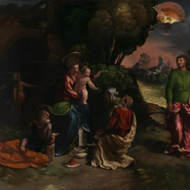
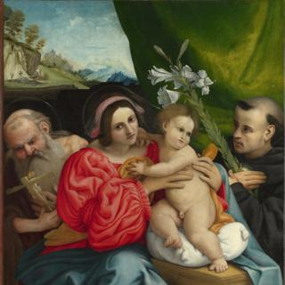
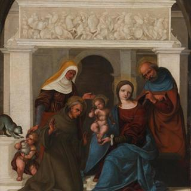
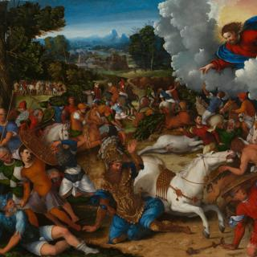

Paris Bordone, 'Christ as 'The Light of the World'', about 1550
Paris Bordone, 'Christ as 'The Light of the World'', about 1550
Overview
Christ’s hand is raised with his index finger pointing upwards, perhaps towards heaven, represented by the sunlit sky through the window. He holds a scroll inscribed: EGO. SVM. LVX. MŪD. meaning ‘I am the Light of the World’ (John 8: 12). Christ goes on to promise that ‘he who follows me will not walk in darkness, but will have the light of life,’ underlining his role as saviour.
Paintings of this type were kept in houses, especially in bedrooms and also displayed in churches. The painting is signed on the plinth of the pillar.
The hatching of the shadows in Christ’s eyes and the thin horizontal lines of white crossing his irises are typical of Bordone’s style and can also be seen in his Portrait of a Young Woman. The red of Christ’s garment has faded, making the highlights and shadows appear rather hard and abrupt.
In-depth
Christ’s hand is raised with his index finger pointing upwards, perhaps towards heaven, represented by the sunlit sky through the window. He holds a scroll inscribed in dark blue paint: EGO. SVM. LVX. MV̅D. meaning ‘I am the Light of the World’. These are Christ’s words in the Gospel of John (8:12). Christ goes on to promise that ‘he who follows me will not walk in darkness, but will have the light of life,’ underlining his role as saviour. The painting is signed in partly legible letters on the plinth of the pillar: O. [for Opus, meaning ‘work’] Paridis Bor...on.
Christ’s face is closely observed and painted, as though it were a portrait from life. Bordone expresses his artistry – expressed in his prominent signature – through his flamboyant brushwork and Christ’s animated pose. Christ’s halo of golden light is painted with small dots and dashes of lead-tin yellow and ochre, and a similar technique is used for the gold decorations at the sleeves and neck of his robe, which flow over the fabric like staves of music. The hatching of the shadows in Christ’s eyes and the thin horizontal lines of white crossing his irises, which give his expression life, are typical of Bordone’s painting technique, and can also be seen in his Portrait of a Young Woman. Bordone’s approach to the crinkled blue fabric lining Christ’s cloak is similar to that worn by the woman in his A Pair of Lovers – the folds are purely decorative and bear no relation to how the fabric might actually hang. The red of Christ’s robe has faded, making the highlights and shadows now appear rather hard and abrupt.
Paintings of this type were kept in houses, especially in bedrooms. They were also, from an early date, displayed in churches. There is an almost identical version of this painting in the Accademia Carrara in Bergamo. The architectural background is extremely similar to that in Bordone’s Portrait of a Woman with a Squirrel (Städtische Kunstsammlungen, Augsburg).
The painting was a gift to the National Gallery from Mrs Mary Wood and her brother the Revd G. Greenwood in 1901. It had been given to their father, the surgeon Mr Henry Greenwood, by a member of the Sicilian Embassy in thanks for his kindness to a Sicilian lady in 1819. The lady had been taken from her convent in Sicily aged 15 by an English army officer called Captain Soden, married and brought to England. By the time she met Mr Greenwood, Mrs Soden was widowed, diseased and starving with three children. Mr Greenwood went to the Sicilian Embassy to try to help her. The Embassy wrote to Mrs Soden’s father, who was one of the principal nobles of Naples and Sicily, but he said that his daughter was dead to her family. However, the War Office was persuaded to give Mrs Soden a pension as an officer’s widow.
- NG number
- NG1845
- Date made
- About 1550
- Medium
- Oil on canvas
- Dimensions
- 90.7 × 74.7 cm

Paris Bordone, 'Portrait of a Young Woman', about 1545
Paris Bordone, 'Portrait of a Young Woman', about 1545
Overview
A young woman, wearing a crimson robe and pearl necklace from which a gold cross is suspended, stands in an imaginary architectural setting. An opening into what appears to be a brightly lit courtyard reveals a precarious, twisting flight of stairs. A man in a dark costume stands at the top, apparently watching the woman below.
The inscription above the lady’s right shoulder says she is 19 years old. However, her untucked translucent shawl, sideways glance and bold hand on her hip suggest she might not have been as demure as her cross implies. She may have been a beautiful courtesan.
The picture was possibly made to hang to the left of a painting of a young man, maybe the lady’s betrothed or her lover. This would explain her sidelong glance and the light falling from the right, which is very unusual in Bordone’s work.
In-depth
An opulently dressed young woman stands in an imaginary architectural setting. She is brightly lit compared to the dark classical columns and bottle-glass window above her. Her dress of crumpled crimson silk has detachable sleeves, which are embroidered with meandering textured bands.The style of the dress, especially the puffs at the tops of the sleeves, suggests a date in the mid- to late 1540s.
The young lady wears a pearl necklace from which is suspended a gold cross with four dangling pearls, and a blue stone or enamel ornament in its centre. Around her waist is an ornamental chain with hollow perforated gold beads between the links. She may be holding a pomander containing sweet smelling herbs, a tiny book, a scent bottle or locket in her hand at the end of the chain.The yellow paint of the gold chain looks dark; it may have become translucent, showing the crimson of the dress beneath. A similar effect can be seen on the right arm of the cross where it is painted over the red dress.
The lady’s facial type and expression, the colour of her flesh, the hatched grey brushstrokes in the shadows around her eyes and under her chin, and the softly boneless anatomy of her left hand are all typical of Paris Bordone’s work. So is the glimmer of light in the lady’s eyes: her irises with their very large pupils are crossed by a short, slightly curved line of white impasto.
In the upper left of the painting is an opening into what appears to be a brightly lit courtyard with an impossibly precarious, twisting flight of stairs. The staircase relates to a design published by Sebastiano Serlio in his book of architecture. A man in a dark costume stands at the top of the stairs apparently watching the woman below. In the nineteenth century the setting was described as a ‘portion of the hospital at Genoa’ and the sitter was said to be a member of the Genoese Brignole family.
The lady appears to have hastily opened her translucent shawl and tucked it carelessly into her dress, revealing her flushed bosom in a way that may have been intended to appear provocative and enticing. Her sideways glance and the bold gesture of her hand on her hip might suggest that she was not as demure as her cross implies.
This is probably the portrait of a particular young woman. It is inscribed ‘AETATIS SUAE / ANN. XVIII’ on the architecture above her right shoulder, showing that she is 19 years old. Another painting by Bordone, the so-called Violante (Alte Pinakothek, Munich), which has a similar bold sideways glance and pose, is now generally regarded as the portrait of a courtesan or of an ideal beauty for which a courtesan modelled.
The National Gallery’s picture may have been made to hang to the left of a painting of a young man, possibly the lady’s lover or betrothed. This would explain the woman’s sidelong glance and the light falling from the right, which is very unusual in Bordone’s work. It may be the portrait of ‘a most lascivious woman’ sent by Bordone to Ottaviano Grimaldi with Grimaldi’s own portrait (Palazzo Rosso, Genoa).
- NG number
- NG674
- Date made
- About 1545
- Medium
- Oil on canvas
- Dimensions
- 100.9 × 82.5 cm

Possibly by Jacopino del Conte, 'Portrait of a Boy', about 1540
Possibly by Jacopino del Conte, 'Portrait of a Boy', about 1540
Overview
The boy regarding us stands in a relaxed confident manner, with one hand on his hip and the other holding the hilt of his sword. The vertical glossy gold stripes of the curtain effectively frame his elegant pose. The costume suggests a date in the mid-1540s and is plainly that of a wealthy family; the full-length format of the portrait also points to an aristocratic sitter.
The boy has been identified as Orazio Farnese (1532–1553), a grandson of Pope Paul III. At the age of nine in 1541, Orazio was sent to the court of King Francis I of France with the aim of promoting a Farnese-Valois alliance. His family commissioned the portrait to mark this occasion. It was the first of several portraits Jacopino was to paint of Farnese family members.
Jacopino has recorded the decoration of the costume and the textures of the various fabrics in exquisite detail. This little boy is not dressed as a child but as a miniature nobleman, even carrying his own sword.
In-depth
The boy regarding us stands in a relaxed confident manner with one hand on his hip and the other holding the hilt of his sword. He is in the corner of a room with a tiled floor, before a curtain of green velvet with wide vertical gold bands, the hem of which is edged with braid with a thick fringe of green and gold stripes. The vertical glossy gold stripes effectively frame the boy’s elegant contrappostal pose (with his weight mainly on one foot).
The costume suggests a date in the mid-1540s and is plainly that of a wealthy family; the full-length format of the portrait also suggests an aristocratic sitter. The boy here has been identified as Orazio Farnese (1532–1553), the youngest child of Pier Luigi Farnese and a grandson of Pope Paul III. His brothers were Cardinals Alessandro and Ranuccio Farnese and Ottavio Farnese, Duke of Parma. However, the fleur-de-lis emblem of the Farnese family is not included in the portrait as might be expected. At the age of nine in 1541, Orazio was sent to the court of King Francis I of France to promote a Farnese-Valois alliance, and the portrait was commissioned by his family to mark his reception at court. The costume is similar to that in Titian’s Portrait of Ranuccio Farnese aged 12 (National Gallery of Art, Washington) painted in 1541 or 1542 when Ranuccio was sent by his grandfather to Venice to become prior of a property belonging to the Knights of Malta. In 1547, Orazio was betrothed to Diana, the daughter of King Henry II of France, and the marriage was celebrated in Paris in 1553. Orazio was tragically killed in a siege near Artois only five months later, aged 21.
This portrait was once thought to be by the Florentine Mannerist painters Pontormo, Bronzino or Francesco Salviati (1510–1563); it is now attributed to Jacopino del Conte (1510–1598). It was the first of several portraits that Jacopino painted of members of the Farnese family.
Although full-length portraits were common in Venice and its states, where pictures were normally painted on canvas, they were rare in Florence where painting on wooden panels persisted longer. This is particularly unusual in being a full-length portrait painted on wood.
The decoration of the costume and the textures of the various fabrics have been recorded in exquisite detail. Tufts of fur emerge from the lining of the black cloak embroidered with gold; the raw-edged slashed silk of the jacket has double lines of self-coloured stitching and a glossy surface sheen; there is delicate red cross-stitch embroidery on the gathered cuffs of the linen chemise. Little red tape bows with gold tips tie the boy’s breeches to his doublet and his codpiece to his belt in an age before the elastic and zips of today’s children’s clothes. Indeed, this boy is not dressed as a child at all, but as a miniature nobleman, even carrying his own sword.
- NG number
- NG649
- Date made
- About 1540
- Medium
- Oil on wood
- Dimensions
- 129 × 61 cm

Dosso Dossi, 'Lamentation over the Body of Christ', about 1517-18
Dosso Dossi, 'Lamentation over the Body of Christ', about 1517-18
Overview
The Three Marys mourn Christ after his crucifixion. The Virgin Mary kneels at Christ’s feet, her outstretched arms framed by her dark mantle. Christ’s crown of thorns lies on the ground, and beside it are the dice thrown by the soldiers who gambled for his clothes. Mary Magdalene kneels by Christ’s head, her arms raised. Mary Cleophas stands behind her clutching her head and tearing her hair with grief. The demonstrative gestures, distorted anatomy and colour contrasts are typical of Dosso’s early work.
In the distance, three crosses stand on the summit of Calvary against the sky. The cross on the left seems to have been Christ’s as the bodies of the two thieves still hang on the other crosses. The way that the figures on the hill behind the Virgin are merely suggested is a remarkable example of Dosso’s dramatic handling of paint, and adds to the expressiveness of the grieving figures.
In-depth
The Three Marys mourn Christ following his crucifixion. The Virgin Mary kneels at Christ’s feet, her outstretched arms framed by her dark mantle. A halo of golden rays of light emanates from her covered head. It is unusual for the Virgin to be shown at Christ’s feet; normally his body is laid across her lap. Christ’s head is haloed by similar rays, although he also has four sets of red rays among them, which show that he is one of the Trinity.
Mary Magdalene kneels by Christ’s head, her arms raised as though gesturing to someone outside the picture, perhaps another mourner. Mary Cleophas stands behind her clutching her head and tearing her hair with grief. All the woman have powerful expressive limbs and intense, anguished expressions. The demonstrative gestures, distorted anatomy and colour contrasts are typical of Dosso’s early work, but here they are taken to extraordinary heights.
Christ’s feet remain crossed, as they were when nailed to the Cross. A wound from a nail can also be seen in his hand. His chest is arched and his head collapsed, as though his body has stiffened in death; its grey colour contrasts with the pink flesh tones of the other, living, figures. His back seems to be resting on the large pink cushion behind his head, although the size of the cushion is unclear as it is the same colour as Mary Magdalene’s skirt.
Calvary, the hill where Christ was crucified, can be seen on the left in the distance. Three crosses stand on its summit against the sky. The one on the left seems to have been occupied by Christ as it looks as though it bears the traditional scroll inscribed ‘I.N.R.I.’, meaning ‘Jesus of Nazareth, King of the Jews’. It is unusual for Christ’s cross not to be in the middle. The bodies of the two thieves still hang on the other crosses. The background of the picture is painted very freely, which is especially noticeable in the rocket-like brushstrokes intended to represent crowds of figures at the base of the hill – a remarkable example of Dosso’s dramatic handling of paint.
The crown of thorns, with which Christ was humiliated during the Passion, lies on the ground beside him; beside it are the dice thrown by the soldiers who gambled for his clothes. It is very uncommon for the dice to be included in a painting of the Lamentation.
Although the distortions of expressions, forms and space in the picture are particularly strange, they and the manner in which it is painted are highly characteristic of Dosso – especially the jagged white lights on the crisp papery folds of Christ’s loin cloth, the flickering yellow and pink brushstrokes of its border ornament and of the tassels of the cushion under Christ’s head and the alternating, almost vertical, strokes of strongly contrasting deep plum and light pink showing the pleats of Mary Magdalene’s dress.
- NG number
- NG4032
- Date made
- About 1517-18
- Medium
- Oil on wood (probably poplar)
- Dimensions
- 36.5 × 30.5 cm

Dosso Dossi, 'The Adoration of the Kings', about 1527-9
Dosso Dossi, 'The Adoration of the Kings', about 1527-9
Overview
Unusually, Dosso has set the Adoration of the Kings at night, which provided opportunities for the flickering brushwork for which he is noted. The huge harvest moon with a pink aureole, traversed by storm clouds, casts a mysterious golden light that picks out features of the fortified town in the background.
On the left-hand side of the scene is what looks like a cave, but is in fact architecture covered by vegetation. This is the artist’s version of the ruined arch – a common symbol in scenes of the Nativity, representing the decline of the old and the coming of a new age. The dramatic moon gives the scene a portentous feel; at the time the painting was made, such meterological effects were frequently interpreted as carrying meaning or presaging important events.
This picture was probably painted in Ferrara, where the artist worked for the court of the ruling Este family.
In-depth
The most striking feature of this painting is the giant blood moon partly covered by grey clouds and a tree branch. Around 1527, Dosso became interested in powerful contrasts of light and shadow and his works depict dramatic weather effects.
The infant Christ part-stands on the Virgin Mary’s knee and lifts his hand in blessing over the kings who have travelled from the East to adore him. The elderly Saint Joseph reclines on the ground, in a pose rather like a classical river god. His elbow rests on an open book that may represent the Old Testament which, after the birth of Christ, will now be superseded by the New Testament.
The kings have carried gifts to present to Christ. They have placed their offerings on the ground before the plinth on which the Virgin rests her foot. Caspar has brought an alabaster or marble vase; the oldest king, Melchior, has taken off his crown and wears a white turban embroidered with orange and blue thread with a golden fringe. Balthasar stands beneath the moon holding a ewer that probably contains frankincense, his arm outstretched. Originally Balthasar’s head faced in the other direction so the gesture may have once looked less strange. His pointed golden crown lies on the grass perilously near his bare foot. The crowd of horses and attendants behind him is supposed to suggest a throng but the effect appears rather muddled. The figure with his back to us derives from Giorgione’s Adoration of the Kings of 1506–7.
Behind the Virgin and Child is what looks like a cave covered in vegetation, but is actually a ruined classical arch – a common symbol in scenes of the Nativity, representing the decline of the old and the coming of a new age. The two bearded men may be sages or prophets.
The landscape is fantastically lit by the huge harvest moon which has turned the night sky on the horizon a deep rose and outlines the silhouettes of trees in gold. The lighting effects give the scene a portentous feel; at the time the painting was made, such meterological effects were frequently interpreted as carrying meaning or presaging important events. The thick grey clouds suggest that a storm is coming – a slender tree on the outskirts of the distant town sways in the wind. Patches of golden light on the ground are broken with shadows thrown by the clouds.
It is possible that Dosso may have seen a nocturnal painting by Giorgione or that he might have been influenced by seeing the work of Albrecht Altdorfer or another German artist. Raphael’s Madonna di Foligno of about 1512 shows the Virgin and Child high up in a cloudy sky against a huge golden sun. It is likely that Dosso actually painted the background in the Madonna di Foligno or, alternatively, that Raphael or whoever assisted him imitated Dosso’s style in painting it.
This picture was probably painted in Ferrara where the artist worked for the court of the ruling Este family. Fingerprints – probably Dosso’s – are very evident in the paint at the edge of the green foliage beside the pink sky, in the yellow of the moon, in the glazes of the green bushes and in the Virgin’s right arm.
- NG number
- NG3924
- Date made
- About 1527-9
- Medium
- Oil on wood (probably poplar)
- Dimensions
- 85.1 × 108 cm

Garofalo, 'A Pagan Sacrifice', 1526
Garofalo, 'A Pagan Sacrifice', 1526
Overview
A young man pours red wine from an amphora onto the goat’s head on the altar; a young woman carries an upside-down torch, while an old woman balances a basket of pears, apples and grapes on her head. For many years the subject of this painting by Garofalo was believed to be a sacrifice of thanksgiving to the gods for the gifts of the fruit-bearing earth. Actually, it represents an ancient funeral.
The painting is based on an illustration that appears in a famous and quite strange antiquarian romance by Francesco Colonna called the Hypnerotomachia Poliphili, published in Venice in 1499. In the part of the book relating to this illustration, Colonna describes the cemetery of those who died for love. All the figures in Garofalo’s painting correspond to those in the woodcut illustration, although none are copied exactly.
In-depth
A young man pours an amphora of red wine onto the goat’s head on the altar; a young woman carries an upside-down torch, while an old woman balances a basket of pears, apples and grapes on her head. These elements probably carried a now obscure meaning understood by the erudite audience for which the picture was made. For many years the subject of this painting by Garofalo was believed to be a sacrifice of thanksgiving to the gods for the gifts of the fruit-bearing earth. Actually, it represents an ancient funeral.
The painting is based on an illustration that appears in a famous and quite strange antiquarian romance by Francesco Colonna called the Hypnerotomachia Poliphili, published in Venice in 1499. In the part of the book relating to this illustration, Colonna describes the cemetery of those who died for love. All the figures in the painting correspond to those in the woodcut illustration and described in Colonna’s text, although none are copied exactly.
There are few Renaissance paintings that follow a text as closely as this one does. However, it does not follow the woodcut illustration exactly. In the illustration, the altar carries the inscription in Latin: hail Valeria, most beloved of all, farewell. Here, only the date 1526 is inscribed in Roman numerals on the base. Also, in Colonna’s text the figures are all of carved marble; here, they are living figures who twist and turn in front of a distant landscape.
Garofalo’s painting was probably made for a specific setting as it is lit from the right – usually his smaller easel paintings were lit from the left. We do not know whether it was Garofalo’s erudite patron, possibly Alfonso I d‘Este, Duke of Ferrara, who suggested basing this painting on the Hypnerotomachia or whether Garofalo already knew of the book himself. It is not clear how familiar even an educated public would have been with it.
The female nude with the upside-down torch is closely related to a marble relief carving of Dido (Hester Diamond Collection, New York) by Giovanni Maria Mosca, one of a series depicting heroines from antiquity. Small reliefs of this type based on antique sculptures were made for the court in Ferrara where Garofalo worked, and it is possible he knew of the Dido and used it as a model for his painting.
Works with subjects based on ancient art and mythology were particularly fashionable among the educated patrons of the north Italian courts at this time. Alfonso I d’Este commissioned several for the Camerino d‘Alabastro (Alabaster Room) in his ducal palace in Ferrara, including Titian’s Bacchus and Ariadne, now in the National Gallery. Garofalo’s earliest surviving independent mythological painting is Minerva and Neptune (Gemäldegalerie, Dresden), dated 1512, which was probably commissioned by Alfonso I d’Este. There are several other mythological paintings by Garofalo which also date from the 1520s.
- NG number
- NG3928
- Date made
- 1526
- Medium
- Oil on canvas
- Dimensions
- 128.3 × 185.4 cm

Garofalo, 'The Agony in the Garden', about 1524-6
Garofalo, 'The Agony in the Garden', about 1524-6
Overview
On the night before his crucifixion, Christ went to the Garden of Gethsemane at the foot of the Mount of Olives in Jerusalem. He said his prayers; his disciples Peter, John and James fell asleep. Christ asked God, if possible, to spare him the destiny that awaited him. Eventually Christ accepted that God’s will must be done, and an angel came from heaven to strengthen and comfort him.
Garofalo depicts Christ at prayer while Judas, who has betrayed him, brings the Roman soldiers to arrest him. An angel appears in a burst of light in the night sky, carrying a Crucifix spouting blood into a chalice. This represents the spilling of Christ’s blood, which will turn into the wine of the Eucharist, and illustrates Christ’s prayer: ‘Father, if thou be willing, remove this cup from me: nevertheless, not my will, but thine, be done’ (Luke 22: 42). Christ touches his heart and gathers his cloak ready to get up and confront his destiny.
In-depth
On the night before his crucifixion, Christ went to the Garden of Gethsemane at the foot of the Mount of Olives in Jerusalem – a place that he visited frequently. He asked his disciples Peter, John and James to keep watch while he prayed, but they fell asleep. In his prayers Christ asked God, if possible, to spare him the destiny that awaited him. This time of Christ’s doubt is known as the Agony in the Garden. Eventually Christ accepted that God’s will must be done, and an angel came from heaven to strengthen and comfort him.
Garofalo depicts Christ at prayer while Judas, who has betrayed him, brings the Roman soldiers to arrest him. They arrive with flaming torches at the gate; the buildings of Jerusalem are visible in the distance. An angel appears in a burst of light in the night sky carrying a Crucifix spouting blood into a chalice – this represents the spilling of Christ’s blood, which will turn into the wine of the Eucharist. The angel also illustrates Christ’s prayer: ‘Father, if thou be willing, remove this cup from me: nevertheless, not my will, but thine, be done’ (Luke 22: 42).
The three apostles sleep on the bank of a brook called the Cedron, the waters of which have been dammed with short sticks. This is a detail used in other paintings by Garofalo, such as The Virgin and Child enthroned with Saint Dominic and Saint Catherine of Siena, where the sticks are just visible at the bottom of the panel. The older apostle is presumably Peter, the younger one must be John. The third apostle, James, is difficult to see, as only the back of his head is depicted leaning against John’s green cloak, to the far right of the painting. As dawn breaks and Judas opens the gate for the soldiers, Christ prays for the third and final time: ‘The hour is at hand, and the Son of Man is betrayed into the hands of sinners’ (Matthew 26: 45). Christ touches his heart and gathers his cloak ready to get up and confront his destiny.
There is another painting of this subject by Garofalo dated 1524 now in the Museum and Art Gallery Birmingham. The National Gallery’s Agony in the Garden was painted at around the same time or possibly slightly later. Garofalo also painted the same subject in 1525–6 as an altarpiece for the Benedictine Church of S. Silvestro in Ferrara (now in the Pinacoteca Nazionale, Ferrara); it is likely that the National Gallery’s painting was a rehearsal for that commission, to test out some ideas in the vertical format. The painting was transferred from wooden panel to canvas before it entered the National Gallery’s collection.
Garofalo’s painting technique here is very close to that of Dosso Dossi, his chief artistic rival in Ferrara. The touches of light punctuating the grass and foliage, and the painting of dawn and torchlight are all reminiscent of Dosso’s approach. In details such as the soldiers with flaming torches on the right, the highlights were applied with a flickering touch, which is very close to Dosso’s technique. Later in Garofalo’s career his style diverged from that of Dosso.
- NG number
- NG642
- Date made
- About 1524-6
- Medium
- Oil, originally on wood, transferred to canvas
- Dimensions
- 49.2 × 38.7 cm

Garofalo, 'Vision of Saint Augustine', about 1520-35
Garofalo, 'Vision of Saint Augustine', about 1520-35
Overview
Saint Augustine (about 354–430) was an early Christian theologian whose writings, which included De Trinitate (About the Trinity), profoundly influenced Western Christianity and philosophy. This painting represents his vision in which he saw a child trying to empty the sea into a hole dug in the sand. When Augustine told him that this was impossible, the child, a messenger from God, replied that Augustine’s attempt to explain the Trinity was an equally impossible task. Garofalo has made the child perched on a mound of sand Christ himself, his head crowned with a halo of rays of light.
Garofalo’s depiction of this episode is unusual in that it also includes the holy family, Saint Catherine and Saint Stephen (on the shore in the middle distance). Saints Catherine and Stephen were probably saints to whom the person who commissioned the painting was especially devoted.
In-depth
Saint Augustine, Bishop of Hippo, was a Roman African, early Christian and theologian. His writings, which included De Trinitate (About the Trinity), profoundly influenced Western Christianity and philosophy. This painting represents Augustine’s vision in which he saw a child trying to empty the sea into a hole dug in the sand. When Augustine told him that this was impossible, the child, a messenger from God, replied that Augustine’s attempt to explain the Trinity was an equally impossible task.
Garofalo has made the child perched on a mound of sand Christ himself, his head crowned with a halo of rays of light. The Christ Child in the heavens and the child below have similar facial features and both have a halo of rays of light and an orange cloak. Saint Augustine wears a church vestment known as a cope, rather unusually painted half blue and half red.
The subject was not rare in art at this time but was usually represented in one of the panels of a predella, the base of an altarpiece showing narrative scenes from the life of the saint featured in the main panel. Garofalo’s painting, although similar in size to a predella panel, was not made as one but rather as an independent picture for private devotion and visual enjoyment.
Garofalo’s depiction of the episode is unusual in that it includes the holy family – Joseph is just visible behind the Virgin and Child in the clouds – and Saint Catherine of Alexandria, beside Saint Augustine, and Saint Stephen, on the shore in the middle distance. Saints Catherine and Stephen, like Saint Augustine, were both associated with north Africa, which may provide a possible explanation for their inclusion. Although they were not alive during the time of Saint Augustine, they were probably saints to whom the person who commissioned the painting was especially devoted. Filippino Lippi’s Adoration of the Magi is a slightly earlier example where other saints are added to a religious narrative.
Saint Catherine stands beside a wheel representing her martyrdom. Garofalo used the blue pigment azurite for her dress rather than the more expensive ultramarine used for the Virgin’s mantle. At the time ultramarine, made from the semi-precious stone lapis lazuli, was more expensive than gold and was always used for the Virgin Mary’s robes. Saint Stephen wears a deacon’s robes and holds the stones with which he was martyred.
The rich colours of this painting are exceptionally well preserved. We can still appreciate the texture of the paint and subtle effects that have survived, particularly in the sky and landscape. Garofalo has painted the blue of the distant hills with ultramarine and white with a greener azurite blue underlayer that is allowed to shine through here and there. Tiny dabs of light appear on the trees to the right and loose brushstrokes of yellow-green enliven the hillsides. The surface of the water is broken with delicate white waves, which ripple and splash against the rocks. Galleons and smaller craft sail near a town on the shore, while a patchwork of fields appears on the mountain slopes. The painting was very highly regarded during the eighteenth and nineteenth centuries.
- NG number
- NG81
- Date made
- About 1520-35
- Medium
- Oil on wood (probably poplar)
- Dimensions
- 64.5 × 81.9 cm

Lorenzo Lotto, 'Portrait of Giovanni della Volta with his Wife and Children', completed 1547
Lorenzo Lotto, 'Portrait of Giovanni della Volta with his Wife and Children', completed 1547
Overview
Lotto wrote in his account book that he gave a painting on 23 September 1547 to ‘Giovanni della Volta, my landlord’. He describes it as ‘a painting with his portrait from life and that of his wife with two children, altogether comprising four figures’. The portrait may have been painted in lieu of rent.
The family is gathered around a table covered with an elaborately patterned Turkish carpet. The mother offers cherries from the silver bowl to her daughter while the animated little boy reaches up on one leg for a pair of cherries dangled from his father’s hand. The barren lagoon landscape may have symbolic significance or simply suggest a view through an upstairs window.
There is no other known portrait by Lotto of a married couple and two children – such portraits were unusual in early sixteenth-century Italy. Double portraits of couples were rare in Venice, but more common on the mainland where Lotto had worked extensively and painted several.
In-depth
When Lotto painted this picture he had recently returned to Venice from Treviso. He wrote in his account book that he gave a painting on 23 September 1547 to ‘Giovanni della Volta, my landlord’. He describes it as ‘a painting with his portrait from life and that of his wife with two children, altogether comprising four figures’. Perhaps the portrait of the family was painted in lieu of rent, which would have been due in November 1546 and May 1547.
The family is gathered around a table draped with an elaborately patterned Turkish carpet. Oriental carpets were often used as table coverings in the sixteenth century – it was unusual to put them on the floor as they were very expensive. This type of carpet, with an ornamental border of pseudo-Kufic script, was frequently represented by Lotto and is now commonly known as a ‘Lotto carpet’. The silver bowl of cherries in the centre forms the focal point of the portrait. The reflection of the carpet’s pattern can be seen in its polished surface. The daughter places cherries from the bowl in her mother’s hand.
The woman is in the position of honour on the man’s right, which is unusual. The painting is also lit from the right, which suggests it was made for a specific location. The barren lagoon landscape may have symbolic significance or simply suggest a view through an upstairs window. However, what seems like smoke rising from the distant mountain may be an unintended consequence of the very worn condition of the paint in the clouds. Indeed, large areas of the painting are abraded.
The animated little boy, striking in his translucent blue drapery, reaches up on one leg for a pair of cherries dangled from his father’s hand. His strange, semi-nude appearance may have symbolic significance, perhaps to emphasise his status as first-born male and thus heir. His pose may be based on a sculpture, reminiscent as it is of the relief of dancing children in Titian’s Portrait of Clarice Strozzi dated 1542 (Gemäldegalerie, Berlin). It could have been based on a recorded relief sculpture brought from Florence to Venice by Bartolomeo Ammannati, a sculptor in the workshop of Lotto’s friend, Jacopo Sansovino.
The position of the woman’s hand on her hip and her crumpled sleeves of deep rose satin are reminiscent of those in Portrait of a Young Woman of about 1545–50 by Paris Bordone, whom Lotto certainly knew. The contrast between light and shade in the fold of the woman’s right sleeve has been exaggerated by the fading of the red lake pigment where it is thinly painted, which is also a common problem in paintings by Bordone.
There is no other known portrait by Lotto of a married couple and two children – such portraits were unusual in early sixteenth-century Italy. In Venice double portraits of a husband and wife were also uncommon and we know of no earlier examples; Lotto may have come up with the idea himself. He had painted two double portraits of married couples 20 years earlier during his time in Bergamo, Marsilio and his Wife (Prado, Madrid) and Portrait of a Married Couple (Hermitage, St Petersburg). He painted another double portrait in Venice in 1549 of his fellow tenant Girolamo Pullino and his wife (now lost).
We know from Lotto’s account book entry that the Portrait of Giovanni della Volta with his Wife and Children originally had a cover of stretched, possibly decorated, fabric to protect it, which has been lost.
- NG number
- NG1047
- Date made
- Completed 1547
- Medium
- Oil on canvas
- Dimensions
- 104.5 × 138 cm

Lorenzo Lotto, 'The Virgin and Child with Saints', 1522
Lorenzo Lotto, 'The Virgin and Child with Saints', 1522
Overview
No other Renaissance painting of the Virgin and Child with saints shows the naked infant Christ sitting on a pillow on a coffin. This unique addition indicates Christ’s acceptance of and conquest over death. Meditation on Christ’s death encouraged understanding of his suffering for humanity’s redemption.
A tear falls from the elderly Saint Jerome’s eye as he clasps his hand to his chest and contemplates a figure of the crucified Christ. Saint Nicholas of Tolentino, wearing the black habit of the Augustinian Order, has a sacred radiance glowing on his chest and holds a lily.
There is another better-preserved and higher-quality version of this painting at the Museum of Fine Arts, Boston. Lotto appears to have worked on both pictures at the same time, drawing and resolving the composition in the Boston version and then reproducing it on the National Gallery’s canvas. The pictures were probably painted towards the end of the period that Lotto spent mainly in Bergamo.
In-depth
The Virgin Mary holds the naked infant Christ who sits on a pillow on a coffin. The elderly Saint Jerome clasps his hand to his chest and contemplates a figure of Christ on the Cross with great sorrow as a tear falls from his eye. The younger saint holding the white lilies is Saint Nicholas of Tolentino, an Augustinian friar who wears the black robes of his Order. He has a sacred radiance glowing on his chest, which refers to the star that shot forth from Sant‘Angelo where he was born, and stood over the city of Tolentino, where he settled.
The coffin on which the infant Christ sits is a unique addition, not found in any other Renaissance painting of the Virgin and Child with saints. It indicates Christ’s acceptance of and conquest over death. It was common to include emblems of Christ’s Passion in images of him as an infant, for example a goldfinch, a lamb, or carpenter’s tools such as a hammer or nails. Meditation on Christ’s death encouraged understanding of his suffering for humanity’s redemption. There seems to be some connection between this image and Lotto’s panel of a nude putto crowning a skull with a laurel garland, now at Alnwick Castle. The putto has a similar anatomy and attitude to the Christ Child, the skull rests on a large white cushion and there is a similar landscape in the background. That picture is likely to be a memento mori, a reminder of the inevitability of death.
There is another higher-quality and better-preserved version of this painting at the Museum of Fine Arts, Boston. Lotto appears to have worked on both pictures at the same time, drawing and resolving the composition in the Boston version and then reproducing it on the National Gallery’s canvas, which is signed and dated ’Laurentius Lotus 1522‘. The layer structure of the paint and the materials are identical in both versions, as are many of the changes to the composition, known as pentimenti. The pictures were probably painted towards the end of the period that Lotto spent mainly in Bergamo. There is a third version of the painting in the Palma Camozzi Vertova Collection, Bergamo, which has a similar Virgin, child and coffin but different saints (Saint John the Baptist and Saint Catherine of Alexandria) and which is also signed and dated 1522.
The practice of painting two versions of a picture at the same time was common when artists were painting for the market rather than on commission, and the Virgin and Child with saints was a typical repertoire subject in artists’ workshops. Saint Nicholas of Tolentino appears relatively rarely in paintings for private devotion and it is possible that the patron of the Boston version wanted a copy of the picture to present to a relative or friend. It is also possible that Lotto made it for himself, to have a copy of the composition for future reference. The Boston version of Lotto’s picture is surely the prime version, not only because it was worked out first but also because it was painted with the more expensive pigment of ultramarine; the blue in our version is cheaper azurite. It is likely that when the two paintings were made it was decided that one of them should cost less than the other.
- NG number
- NG2281
- Date made
- 1522
- Medium
- Oil on canvas
- Dimensions
- 91 × 75.4 cm

Ludovico Mazzolino, 'The Holy Family with Saints', about 1514-16
Ludovico Mazzolino, 'The Holy Family with Saints', about 1514-16
Overview
The Virgin Mary is seated on a bench, holding the infant Christ. He raises his right hand to bless Saint Francis, who kneels with his hands raised to reveal his stigmata – marks on his body which correspond to the wounds suffered by Christ during the Crucifixion.
Saint Joseph, Mary’s husband, leans on his stick, with his eyelids lowered or closed. Saint Elizabeth touches the head of her son, the infant John the Baptist, who is holding a lamb and trying to protect it from the monkey perched on a ledge. The classical architecture in the background may be intended to indicate that the pagan world has been superseded by a new Christian era.
The monkey is a puzzling feature. It seems to be threatening the lamb, a common attribute of John the Baptist and a symbol of Christ’s sacrifice. The monkey may represent evil, but as the saint seems to be enjoying its antics it may just be a decorative element.
In-depth
The Virgin Mary is seated on a bench, holding the infant Christ who grasps his mother’s mantle with his left hand while he raises his right to bless Saint Francis. The saint kneels before him with his hands raised to reveal his stigmata – marks on his body which correspond to the wounds suffered by Christ during the Crucifixion. Golden rays radiate from Saint Francis’s stigmata on his hands and side. The haloes painted with fine cross hatching in shell gold are typical of Mazzolino and can also be seen in his Nativity with a Shepherd.
Saint Joseph stands on the right, leaning on his stick, with his eyelids lowered or closed. Mazzolino also showed Saint Joseph slumbering in the Nativity with a Shepherd. Behind Saint Francis stands Saint Elizabeth, who touches the head of her son – and Christ’s cousin – John the Baptist. The chubby infant is holding a lamb and trying to protect it from the monkey perched on a nearby ledge. Elizabeth is depicted as an old woman as she miraculously conceived her son in old age after many years of being barren. She looks down at her nephew, Christ, with her mouth open and palm raised as if speaking to him.
A building with a very unusual portico is painted in the background. Two plain pillars support a relief of battling Amazons. The block above it is decorated with a similar classical subject. On either side of this there are two imaginary sculpted scenes of military leaders on plinths addressing groups of soldiers. Roman military standards are displayed in the background. The classical architecture may be intended to represent the pagan world that has been superseded by a new Christian era.
The monkey is a puzzling feature. It seems to be threatening the lamb, a common attribute of John the Baptist and a symbol of Christ’s sacrifice. It has been suggested that the monkey might represent evil, but the Baptist seems to be enjoying its antics so it may just have been included as a decorative element. Monkeys appear in other pictures by Mazzolino, such as the Holy Family with the Infant John the Baptist and Saint Elisabeth (Bargellesi collection, Milan) and the Dispute in the Temple (Gemäldegalerie, Berlin). In a Holy Family by Mazzolino in the Louvre, the infant Baptist holds out cherries for a monkey. A monkey also appears in Garofalo’s The Virgin and Child enthroned with Saint Dominic and Saint Catherine of Siena.
This was one of the paintings bequeathed in 1830 to the National Gallery by the Revd William Holwell Carr. In addition to Mazzolino’s Holy Family he also bequeathed two other Ferrarese pictures: Garofalo’s Saint Augustine with the Holy Family and Saint Catherine of Alexandria and The Conversion of Saint Paul by Giacomo Panizzati.
- NG number
- NG82
- Date made
- About 1514-16
- Medium
- Oil on wood (probably poplar)
- Dimensions
- 53 × 39.4 cm

Giovanni Battista Moroni, 'Portrait of a Gentleman ('Il Gentile Cavaliere')', about 1564-5
Giovanni Battista Moroni, 'Portrait of a Gentleman ('Il Gentile Cavaliere')', about 1564-5
Overview
The traditional Italian title of this portrait, ‘Il Gentile Cavaliere’, means ‘the well-born gentleman’. The prominent sword, a symbol of gentility, and the books suggest that he is a man of action as well as learning. He holds a letter addressed ‘al...Sig’ (To Lord), but the name is now illegible. Below that is written ‘Berg’, for Bergamo. His black costume decorated with gold braid and the style of his hat are similar to those worn at the French court. An unusually large number of old versions of this portrait survive, which may suggest that the sitter was someone important.
Since the sword is worn on the man’s right side, he must be left-handed. It is very rare to find an explicit reference to left-handedness in a portrait of this date, as it generally had negative associations.
The plain background and rapid brushwork conveying a strong sense of naturalism are typical of Moroni’s portraiture of the mid-1560s.
In-depth
The traditional Italian title of this portrait, ‘Il Gentile Cavaliere’, means the ‘well-born gentleman’. The two quarto-sized leather-bound books on which he leans his hand, and his prominent sword – a symbol of gentility – suggest that this nobleman is a man of learning as well as action.
As in many of Moroni’s portraits, the man holds a letter that records his identity. It is addressed ‘al...Sig’ (To Lord), but the name is now illegible. Below that is written ‘Berg’, for Bergamo. The black costume decorated with gold braid is typical of the French court and would have been a contrast to the Spanish fashion dominant in Bergamo at the time. The angle at which the cap is placed on the man’s head, as well as its jewelled band decorated with pearls, is similar to those in portraits by the French painter Clouet. A surprisingly large number of old versions of this portrait survive, which suggests that the sitter was someone important.
Since the sword is worn on the man’s right side, he must be left-handed. It is very rare to find an explicit reference to left-handedness in a portrait of this date. Although there are references to left-handed swordsmen in literature of the period, left-handedness generally had negative associations. The sword has a hilt of chiselled steel with a pommel decorated with a pattern of linked circles. The dagger, worn on the man’s left, has a pommel decorated with domed projections.
Moroni’s earlier portraits of the 1550s, such as A Knight with his Jousting Helmet are meticulously painted, with crisp outlines, and often feature ruined architectural settings. In Portrait of a Left-Handed Gentleman, Moroni adopts a softer, more atmospheric approach which enhances the startling naturalism of the face, and he pays new attention to the expressive potential of the sitter’s hands.
The muted grey background is very freely painted – large unblended brushstrokes of dark paint are swept over and into lighter still-wet paint. The background must have been painted late as it passes over the edge of the sitter’s right arm. The plain background, looser technique and rapid brushwork are typical of Moroni’s portraiture of the mid-1560s. This dating is also confirmed by the style of the ruff and that of the braided doublet with its low waist.
Moroni is different from Titian and his other contemporaries in that he needed his portrait sitters in front of him; other portraitists were better able to imagine or reinvent their sitters from drawings or memory. The striking naturalism and psychological depth of Moroni’s portraits is a direct result of painting from life. We don‘t just look at his sitters, we feel we are engaging with them on a personal level. Moroni’s skill at expressing his sitters’ inner lives continued to develop during his final years in works such as The Tailor and Portrait of a Man holding a Letter.
- NG number
- NG2094
- Date made
- About 1564-5
- Medium
- Oil on canvas
- Dimensions
- 100.4 × 81.2 cm

Giacomo Panizzati, 'The Conversion of Saul', about 1535-40
Giacomo Panizzati, 'The Conversion of Saul', about 1535-40
Overview
The conversion of the Pharisee Saul is described in the Acts of the Apostles (9: 1–9). As the Jewish conservative Saul was approaching Damascus to persecute disciples of Jesus, a light from heaven suddenly blinded him, making him fall to the earth. ‘Saul, Saul,’ Jesus called, ‘why do you persecute me?’
Saul is the figure in blue wearing gilded metal armour – he has fallen from his horse at the sight of Christ in the clouds. In the distance we see the next part of the story as the stupefied Saul and his horse are led towards Damascus by his men. There he recovered his sight and, as the Apostle Paul, joined the Christians whom he had set out to persecute.
The shields, armour and horse trappings are very highly decorated in antique style and reveal a knowledge of ancient and contemporary gems. Alfonso I d’Este, Duke of Ferrara, had a particular enthusiasm for engraved gems, and this painting may have been commissioned by or intended for him.
In-depth
The conversion of the Pharisee Saul is described in the Acts of the Apostles (9: 1–9). The religious conservative Saul was sent to Damascus in Syria by the High Priest of the Temple in Jerusalem to persecute disciples of Christ. As he was approaching Damascus, a light from heaven suddenly flashed around him, making him fall to the earth. ‘Saul, Saul,’ a voice called, ‘why do you persecute me?’
When Saul asked who was speaking the voice replied that it was Christ. He told Saul to get up and enter the city and that he would tell him what to do. Saul’s companions heard nothing, but realising he had been blinded they led him into Damascus. There he recovered his sight and, as the Apostle Paul, he joined the Christians whom he had set out to persecute.
Saul is the figure in blue wearing gilded metal armour – he has fallen from his horse at the sight of Christ in the clouds. The size of the entourage accompanying Saul is somewhat unusual, and his men and their horses also seem to be thrown into confusion by the sudden appearance of Christ. In the distance we see the next part of the story as the stupefied Saul and his horse are led towards Damascus by his men.
The shields, armour and horse trappings are very highly decorated in antique style with medieval heraldic motifs. Saul’s breastplate is ornamented with a relief of a nude woman flanked by griffins, and the handle of his sword is in the form of a wolf’s head. The red and yellow leather armour worn by soldiers in the right foreground is inspired by the form of military costumes in antique Roman sculpture.
The mask shoulder ornament on the yellow leather armour reveals a knowledge of the Medusa heads on ancient gems. Other details suggest that the artist knew of the celebrated contemporary gem engravers Valerio Belli (about 1468–1546) and Giovanni Bernardi (1494–1553). The raised shield of the soldier behind Saul is decorated with a relief designed by Valerio Belli and his name is engraved below it – no other painting of this date includes another contemporary artist’s work and signature. Alfonso I d’Este, Duke of Ferrara, had a particular enthusiasm for engraved gems, and this painting may have been commissioned by or intended for him.
The painting is described in the 1592 inventory of Lucrezia d’Este, Duchess of Urbino, but was then believed to be by Mazzolino. However, it is similar to the Massacre of the Innocents of about 1535 attributed to Giacomo Panizzati (Uffizi, Florence) and to Christ driving the Merchants from the Temple (Galleria Doria Pamphilj, Rome), also attributed to him.
Panizzati must have known of Garofalo’s Conversion of Saul (Yale University Art Gallery, New Haven), as the pose of his sprawling soldier in the left foreground is based on the pose of Garofalo’s Saul. He also shows an awareness of some of the bearded heads of the grotesque tumbling giants in Giulio Romano’s frescoes in the Palazzo Te in Mantua, completed in 1535, although Panizzati has not succeeded in replicating Giulio Romano’s heroic style. The significant amount of shell gold applied with great skill and delicacy – for example on the helmets, shields and armour – is a remarkable feature of this picture.
- NG number
- NG73
- Date made
- About 1535-40
- Medium
- Oil on wood (probably poplar)
- Dimensions
- 58.1 × 69.8 cm

Rosso Fiorentino, 'Portrait of a Young Man holding a Letter', 1518
Rosso Fiorentino, 'Portrait of a Young Man holding a Letter', 1518
Overview
This is the earliest of very few known portraits by Rosso. It was painted in Florence, while he was in the workshop of Andrea del Sarto. It reveals something of Rosso’s eccentricity, particularly in the strange spiky fingers, the curiously abstract style and the characteristically swift way of working the paint. The features of the face all but dissolve when viewed close up, but the sketchy brushstrokes blend into a powerfully convincing and memorable likeness when seen from a distance.
The young man, as yet unidentified, glances up from a letter dated 22 June 1518. The letter bears further traces of writing which may provide clues to his identity. His gaze is both dreamy and penetrating. This sense of psychological realism and immediacy was only just beginning to find a place in portraiture at the time the work was painted, appealing to the rising class of wealthy and intellectual patrons.
In-depth
A young man glances up at us from the letter he has just been reading. He wears a black watered silk jacket with large damask sleeves. His expensive yet sober costume suggests that he is a man of wealth and status, perhaps with literary or political interests.
This is the earliest of about five portraits generally agreed upon as being by Rosso Fiorentino and the only one that is precisely datable. It was painted in Florence when he was about 24, while he was in the workshop of Andrea del Sarto. Sarto was away in France at the time, which opened up opportunities for other artists to take on new commissions. The pared-back setting, restrained colour palette and the sense of a private moment interrupted in Rosso’s portrait is comparable to Sarto’s Portrait of a Young Man, of about 1517–18.
The portrait reveals something of Rosso’s eccentricity, particularly in the strange spiky fingers, the curiously abstract style and the characteristically swift way of working the paint. More than any of his Florentine contemporaries, Rosso allowed his brushstrokes to remain visible rather than blending them. The facial features are made up of hasty brushstrokes applied in hatching and cross-hatching. There appears to be no underdrawing, suggesting that the portrait may have been swiftly painted from life. A few changes were made to the composition during painting, notably in the sitter’s hands and around the edges of the letter; originally more of the youth’s elegant white shirt was covered up by his black coat. Although the portrait is not signed, the distinctive manner in which it is painted is as good as a signature. The features of the face all but dissolve when viewed close up, but the sketchy brushstrokes blend into a powerfully convincing and memorable likeness when seen from a distance. This approach is also a feature of Portrait of a Knight of Saint John by Rosso.
The unidentified young man glances up from a letter dated 22 June 1518, which suggests that this date may have been of special significance to him. The letter bears further traces of writing which may provide clues to his identity, but they are extremely difficult to read and have yet to be deciphered. The part of the letter closest to the fingers of his right hand appears to include his name, as the writing here would have been on the outside of the letter when folded. The single word barely visible between his fingers was probably his address. The wax seal is stamped with the lily of Florence.
The man’s gaze is at once dreamy and penetrating, as though we have momentarily interrupted his reading and his thoughts are still on the contents of the letter. This sense of psychological realism and immediacy was only just beginning to find a place in portraiture at the time the work was painted, appealing to the rising class of wealthy and intellectual patrons.
The free technique and abstract forms displayed in this excellently preserved portrait heralded a new style of painting. At first Rosso’s approach proved too radical for many potential patrons, so he worked mainly outside his native city of Florence, finding employment initially elsewhere in Tuscany, and then in France. But it was for unconventional images like this that Rosso eventually became celebrated.
- NG number
- NG6584
- Date made
- 1518
- Medium
- Oil on wood
- Dimensions
- 85.5 × 66.5 cm